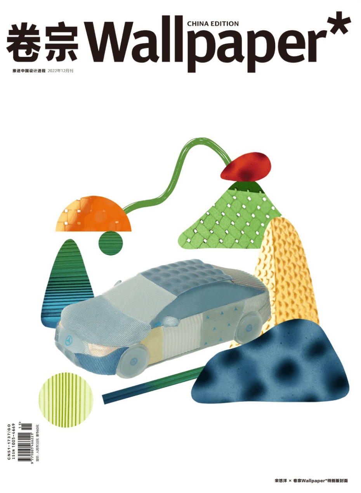
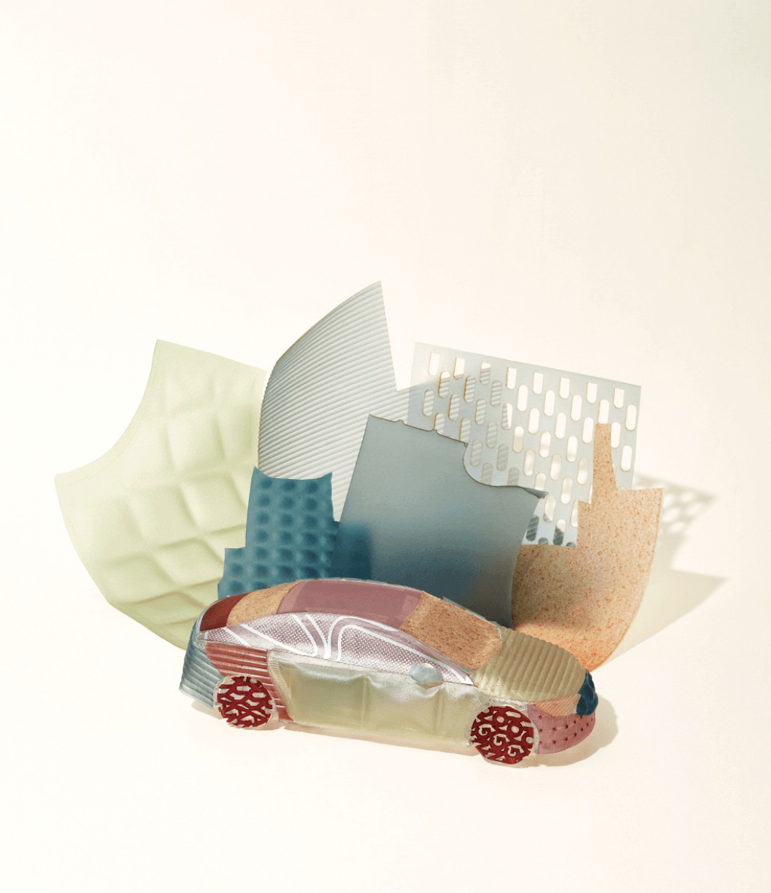
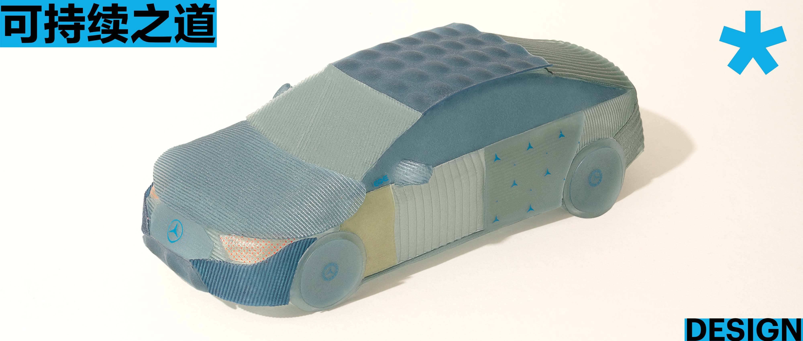

Mercedes EQE X PEELSPHERE®
In the midst of the current serious environmental situation, Mercedes-Benz hopes to explain to the public the importance of low-carbon and sustainable development. While Mercedes-Benz is committed to a sustainable future with "full electrification," it also proposes a new idea for the combination of biotechnology and material experimentation - let nature be the armor.

For this reason, new material designer, Youyang Song, was invited by Mercedes-Benz to use a brand new, 100% sustainable material to create the art body for the new pure electric Mercedes EQE as the theme of the December special issue cover of "Wallpaper" This new material, called "PEELSPHERE" is made from recycled bio-waste such as different fruit or food residue. This special art collaboration is also a new exploration by both PEELSPHERE and Mercedes-Benz on the sustainable path.
In November 2019, at a contemporary art exhibition, Youyang's "Bio-new Material" project was first introduced to the public. At that time, she was a graduate student at the Berlin Weißensee Academy of Art and Design, majoring in material and surface design, researching how to turn food waste into a new material that resembles leather in different aspects. In the exhibition, Youyang hoped to use the "zero-waste" recycling system represented by the new material to remind people of the reality of materialistic expansion; as an art piece, it mocked the consumerism atmosphere prevalent in November, and as a scientific research achievement in the field of materials, the "Bio new Material" explored a sustainable way for humans to deal with bio-waste.

In Berlin, Germany, where Youyang lived, an estimated 60,000 to 70,000 tons of bio-waste was produced annually, of which about 17% was fruit waste. Compared to non-degradable materials like plastic, although bio-waste is relatively less polluting to the
earth, bio-waste is mainly used to produce fertilizer and natural gas, and the transformation process requires a lot of energy, which is often neglected in the exploration of materials. If bio-waste can be transformed into new materials,
it can turn waste into treasure, solving some of the problems of biological waste treatment and reducing the use of non-degradable materials. Therefore, at that graduate stage, she followed the guidance of her professor in the field of
new materials and began the research of innovative materials.
This is the origin of the PEELSPHERE story. By learning from nature and understanding the way of the ecosystem and cycle system, Youyang described her research on PEELSPHERE as an inspiring "seed-sprout-seedling-preparing to bloom"
cycle. Today, PEELSPHERE has gradually realized a closed-loop design system with zero pollution through three steps: recycling bio-waste such as fruit waste, re-processing, and redesigning. It provides a practical solution to the current
problem of bio-waste disposal and also continuously raises consumers' awareness of environmental protection and the concept of circular use of bio-waste, raising the popularity of the green living philosophy. This has earned PEELSPHERE
new material numerous awards, such as the German Sustainability Award, Kering K-Generation Award, German MATERIALICA. Design + Technology Award and Oxford All-Innovate Award.
Youyang leads a team of material scientists, product designers, and business development experts. PEELSPHERE's new material is not just limited to the laboratory stage but has become a new strategy for various industries, building
a "sustainable" production and life.
One important attempt is the cooperation with the new all-electric Mercedes EQE. Before this, PEELSPHERE also collaborated with the environmental fashion brand Pangaia, using PEELSPHERE's new material to replace leather material
and promote "sustainable fashion"; and with the Swedish brand Oatly to explore new uses for oatmeal residue. The oat byproduct, oat residue, is transformed into a translucent bio-fabric and made into jackets, surface decorations, table
items, and dividing screens, demonstrating a healthier and more sustainable lifestyle.
Receiving the invitation from "Wallpaper" and Mercedes-Benz, Youyang expressed: "I am very happy to be able to use PEELSPHERE material to create an artistic body for the all-new pure electric EQE. This is a novel, interesting and challenging project at
the same time. Because in the past, PEELSPHERE is often used in cross-industry cooperation in the role of replacing "soft" applications such as leather. But this time, we are going to create an artistic model that is both aesthetically
pleasing and protective and also challenges the material's processability. Therefore, in the artistic cooperation, we not only fully explored and communicated in terms of the overall direction and concept but also considered how to blend
PEELSPHERE's style with Mercedes-Benz's style and temperament in terms of specific colors, patterns, styles, and processing techniques."
She said: "So far, PEELSPHERE has developed four types of new materials. The first one is based on fruit waste, the second is a translucent natural plant-dyed material, the third is a material like leather, and the fourth is a
hard material such as a biodegradable button." In the end, Youyang chose one of the materials, Indigo, as the main body of the new all-electric EQE art. Indigo refers to natural indigo dye derived from the plant Polygonum tinctorium, which
has a long history of dyeing. Youyang introduced: "natural indigo dye provides various shades of blue from very clear to deep blue, with very good lightfastness. In the process of developing the material, we also optimized the processing
of Indigo, making the process simpler, healthier, easier to operate, and color-stable."
Under the wrap of Indigo dyed material, the brand new pure electric EQE art model presents a new appearance that combines a sense of the future, technology, and environmental protection. On the basis of continuing the main color scheme, which is the blue-black color of the Mercedes EQ family, the entire appearance shows steady and powerful, with a tough and delicate texture. The translucency of Indigo material makes the brand new pure electric EQE art model lighter and more transparent and also highlights the clean and environmentally friendly feeling brought by the biodegradable material. If touched by hand, people will also feel the delicate matte texture on its surface and the firm and pliable feel of the material itself. In different sections of the art model body, Youyang selected different textures and colors of PEELSPHERE material to express her feelings and understanding of the new pure electric EQE. "Deep Ocean" represents calmness, "Spring" shows vigorous vitality, and the "Deep Ocean Strip" with diagonal decorations represents neatness and a sense of technology.
In the process of engaging in the development of sustainable materials and cross-border cooperation with different brands, Youyang is also pondering a question: It is certainly good that sustainable materials are being applied by different companies to their production processes. However, at the same time, the process of researching and producing sustainable materials itself still has more environmental issues that deserve much more attention. "The process of developing sustainable materials itself should also be sustainable," said Youyang, "simply producing sustainable materials does not mean TRUE' sustainability,' more aspects such as raw material trackability, energy consumption during production and transportation, waste process and management, and ultimately how to guide consumers to save more energy, etc., every aspect from upstream to the end must be considered."
In general, PEELSPHERE's sustainable design is a comprehensive solution that combines production, design, product, and ecosystem, allowing people to see the true direction of sustainable development in a more comprehensive way. "In the stage of material conception and design, we start by thinking about the product life cycle and consider whether the product is recyclable and reusable. Every step and detail of our design system implements sustainable thinking, not just considering using recycled or recyclable materials to design products, but also considering the acquisition of raw materials, more specifically, cooperation with local juice factories to reduce transportation to the energy consumption of production process and procedures, product design which includes how to guide consumers to raise awareness, and so on. Many aspects are considered in order to comply with the principles of sustainable development." said Youyang.
01/Jan/2023